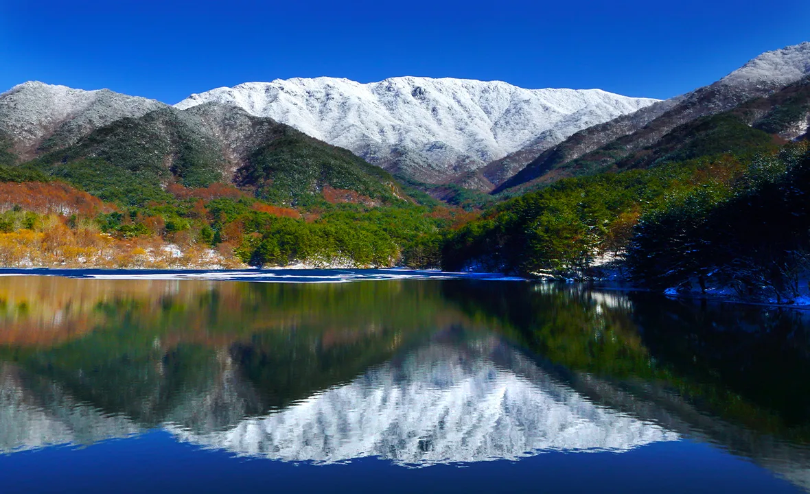
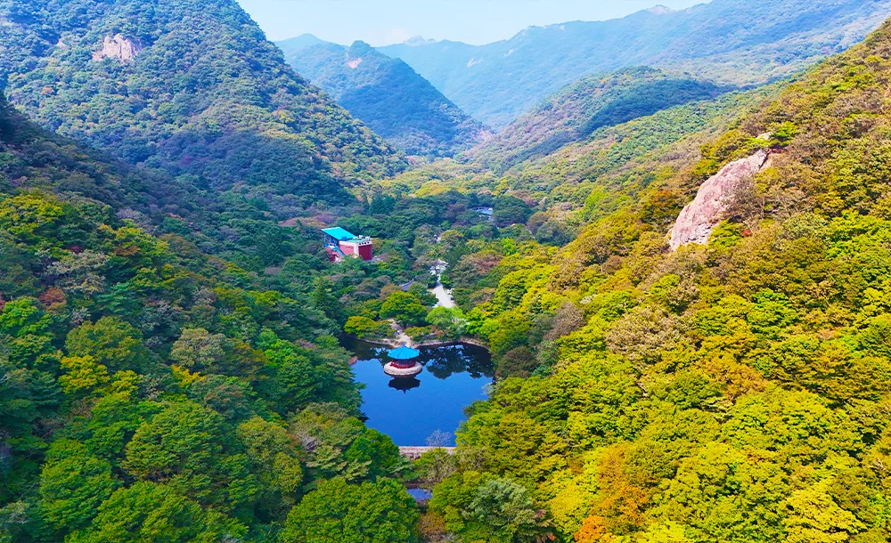
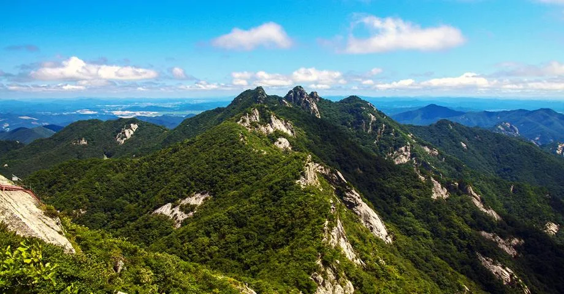

▲ 전북 정읍 내장산 능선. 단풍 명소로 꼽히지만 11월에는 통제 구간을 함께 확인해야 한다
가을 산행 계획에서 가장 자주 어긋나는 것은 날씨가 아닙니다. 문이 닫혀 있는 경우입니다.
가을철 산불조심기간이 시작되면 국립공원 탐방로 상당수가 통제됩니다. 통상 11월 1일부터 12월 15일까지입니다. 그리고 이 기간은 남부 산지의 단풍 절정과 겹칩니다.
1. 11월 1일에 무슨 일이 생기나
산불조심기간은 산 전체를 닫는 제도가 아닙니다. 국립공원공단이 탐방로별로 통제 여부를 정합니다.
통제되는 곳은 대체로 능선 종주 구간과 대피소로 이어지는 장거리 코스입니다. 진화 인력이 접근하기 어렵고, 발화 시 확산이 빠른 구간이기 때문입니다.
📍 왜 가을에 산불이 문제인가
가을은 낙엽이 쌓이고 대기가 건조해지는 시기입니다. 바닥에 마른 연료가 깔린 상태가 됩니다.
여기에 바람이 더해집니다. 능선에서는 불이 지형을 타고 빠르게 번집니다. 통제 대상이 능선 구간에 집중되는 이유입니다.
2. 단풍 절정과 정면으로 겹칩니다
문제는 달력입니다. 남부 산지의 단풍 절정은 대체로 10월 하순에서 11월 초순에 옵니다. 산불조심기간은 11월 1일에 시작합니다.
| 구간 | 시기 | 탐방 여건 |
|---|---|---|
| 10월 중순 | 고지대 색 변화 | 통제 이전 — 비교적 자유 |
| 10월 하순 | 중턱 단풍 진행 | 통제 이전 — 절정 직전 |
| 11월 초 | 저지대 절정 | 산불조심기간 시작 |
| 11월 중순 | 단풍 후반 | 통제 구간 확대 |
가장 아름다운 구간과 가장 제약이 큰 구간이 같은 주에 놓입니다. 이 시기 산행 계획이 자주 틀어지는 구조적 이유입니다.

▲ 전북 무주 덕유산. 아래는 단풍, 위는 이미 겨울인 시기가 짧게 존재한다 ⓒ 전북특별자치도 투어전북
3. 입산시간지정제는 다른 제도입니다
여기서 두 제도를 구분해야 합니다. 자주 섞여서 이해되는데 성격이 다릅니다.
| 구분 | 산불조심기간 통제 | 입산시간지정제 |
|---|---|---|
| 제한 대상 | 구간(어디를) | 시각(언제) |
| 내용 | 특정 탐방로 출입 금지 | 탐방로별 입산·통제 시간 지정 |
| 기간 | 산불조심기간 한정 | 연중 운영 |
| 기준 | 산불 위험 | 산행 거리·소요시간·일몰 |
입산시간지정제는 산행 목적지와 거리, 산행 시간 등을 고려해 탐방로별로 입산·통제 시간을 지정해 운영하는 제도입니다. 가을에는 해가 짧아지면서 이 시각이 앞당겨지는 경우가 있습니다.
📍 두 번 막힐 수 있습니다
11월에 남부 국립공원을 찾으면 두 제도를 동시에 만납니다.
가려던 코스가 산불조심기간 통제 구간이면 아예 못 들어갑니다. 통제 구간이 아니더라도 입산시간을 넘기면 그날은 되돌아와야 합니다. 새벽에 출발했는데 오후 늦게 도착하면 둘 다에 걸릴 수 있습니다.
4. 세 산의 사정
대상 공원이 많지만 성격은 제각각입니다. 단풍철에 몰리는 세 곳만 봐도 조건이 다릅니다.
내장산은 단풍으로 이름이 난 곳입니다. 11월에 방문객이 정점을 찍고, 그 시기가 통제 시작과 정확히 겹칩니다. 케이블카와 저지대 탐방로 위주로 계획을 잡으면 영향을 덜 받습니다.

▲ 전북 정읍 내장산. 저지대 코스는 능선 종주보다 통제 영향이 작은 편이다 ⓒ 전북특별자치도 투어전북
덕유산은 고도 차가 큽니다. 향적봉 일대는 이미 겨울에 가까워지는 반면 아래쪽 계곡은 단풍이 남아 있습니다. 같은 산에서 계절이 두 개인 시기가 짧게 존재합니다.
계룡산은 접근성이 좋아 당일 산행 수요가 몰립니다. 갑사 방면 단풍이 알려져 있고, 능선 구간과 저지대 사찰 코스의 조건이 크게 다릅니다.

▲ 충남 공주 계룡산 능선. 접근성이 좋은 만큼 통제 여부 확인이 더 중요하다 ⓒ 공주시
5. 출발 전에 확인하는 순서
확인 순서를 정해두면 헛걸음이 줄어듭니다.
| 순서 | 확인 내용 |
|---|---|
| 1 | 해당 국립공원의 산불조심기간 통제 구간 여부 |
| 2 | 가려는 탐방로의 입산·통제 시각 |
| 3 | 탐방예약제 적용 구간인지 |
| 4 | 주차장 위치와 주차 요금 |
| 5 | 기상 — 일몰 시각과 강수 |
국립공원공단은 통제정보를 별도 페이지로 공개합니다. 산 이름만 검색해 블로그 정보를 보고 출발하면 지난해 기준을 보게 되는 일이 흔합니다.
6. 날짜는 해마다 확정됩니다
마지막으로 분명히 해둘 것이 있습니다. 산불조심기간의 시작일과 종료일, 그리고 통제 구간은 해마다 공고로 확정됩니다.
통상 11월 1일부터 12월 15일까지로 운영돼 왔지만, 그해의 건조 상황과 산불 위험도에 따라 조정될 수 있습니다. 2026년 가을 적용 기간과 대상 구간은 국립공원공단과 산림 당국의 공고로 확인해야 합니다.
계획을 세우는 순서를 바꾸면 실패가 줄어듭니다. 단풍 시기를 먼저 정하고 코스를 고르는 대신, 갈 수 있는 코스를 먼저 확인하고 그 안에서 시기를 맞추는 쪽입니다.